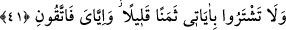

Böylece diğer ümmetler, önce nimeti, sonra onu vereni gördükleri halde, Muhammed
ümmetinin önce nimet vereni, sonra nimeti görmeleri sağlanmıştır. Tabîî bu durum,
nimet; nimeti vereni perdelemediği sürece sözkonusudur.
Ey İsrâîloğulları, “mîsâk” gününde kabûl ettiğiniz; îmân, emirlerime uyma ve
yasaklarımdan kaçınma sözünü yerine getiriniz. Bu verilen söz içinde Tevrât’ta Hz.
Muhammed’e tâbi olma husûsu da dâhildir. Ahd, bir şeyi korumak, her hâlükârda o
şeyin hukûkuna riâyet demektir. Eğer yukarıda saydığım hususları yerine getirirseniz ben
de ecrinizi fazlasıyla verir; sizi cennetime sokarım. “Ahd” kelimesi, muâhid (söz alan)
ve muâhed (sözleşme yapılan) kelimelerine, yâni fâil ve mef’ûlüne muzaf olur. Âyette
ahid kelimesi önce fâiline, ikincisinde de mef’ûlüne muzaf olmuştur. Allah Teâlâ
peygamberler ve kitaplar göndermek ve deliller koymak sûretiyle kullarından îmân edip
hayırlı işler işleme husûsunda söz almış; va’dinden dönmeyenlere de mükâfâtlar
vereceği sözünü vermiştir. Verdiğimiz sözü yerine getirmemizin ilk merhalesi, kelime-i
şehâdettir. Buna mukabil, Allah da malımızı ve canımızı bağışlar. Son merhalesi, bizim
tevhîd denizine dalıp kendimizi ve ağyârı unutmamız; Allah’ın da bize cemâlini nasîb
etmesidir. Nitekim Kuşeyrî âyeti şöyle tefsir etmiştir:
“Siz bu hicâblarla örtülü ve mahbûs dünyâda, sözünüzü yerine getirin. Ben de
kurbiyet âlemi olan âhırette sözümü yerine getireyim. Vuslat sergisi üzerinde üns ve
rü’yetin devâmını size ikrâm edeyim. Siz her iş ve hâlinizde “Rabbim, Rabbim!” deyin.
Ben de her an size “kulum! kulum!” diyeyim. Aksi hâlde korkun Benden. Allah Teâlâ
emirler ve yasaklar husûsunda özellikle de verilen ahdin bozulması husûsunda
kendisinden korkmamızı emretmektedir.
“Benden korkun!” (
) emrinin başındaki “fâ”, cezâiyye olduğu için, mânâ şöyle
olur: “Eğer bir şeyden korkuyorsanız o, Allah olsun!” Rehbet; bir şeyden sakınarak
korkmaktır. Âyetteki “sözümü yerine getireyim” cümlesi va’d, “Benden korkun” cümlesi
de tehdîd mânâsını ifâde etmektedir.
(
) ibâresinin ma’mûlüne tekaddüm etmesi hasr içindir. Allah Teâlâ korkulması
gerekenin sadece kendisi olması gerektiğini duyurmaktadır. Âyetten ayrıca nimete şükür
ve ahde vefânın vâcib olduğu anlaşılmaktadır.
41. Elinizdekini (Tevrât’ın aslını) tasdik edici olarak indirdiğime (Kur’ân’a) îmân
edin. Sakın onu inkâr edenlerin ilki olmayın! Âyetlerimi az bir karşılık ile satmayın,
yalnız benden (benim azâbımdan) korkun.
Yapılan ahdin içinde Kur’ân’a îmân şartı bulunmasına rağmen, “Kur’ân’a îmân
edin” emrinin yeniden tekrarlanması bu husûsun ahde vefâ konusunda en önemli nokta